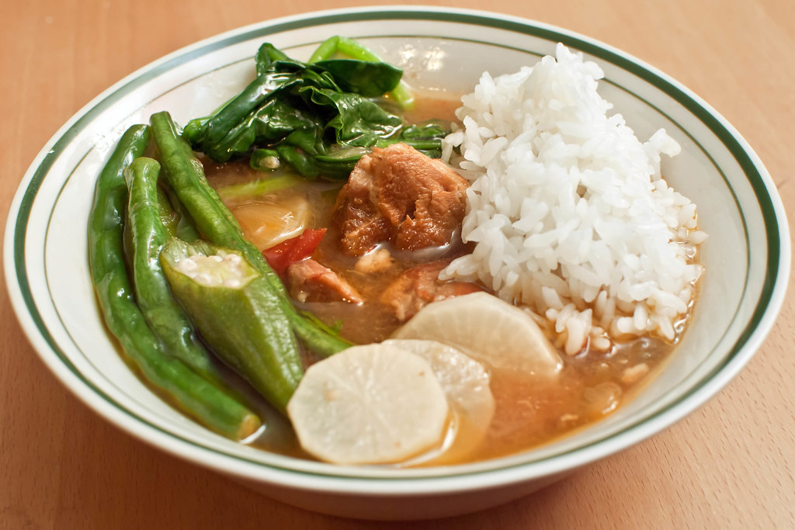

This comfort food is perfect on a rainy day or for dinner after a long day of hard work. The sour punch of the broth accompanying the richness of the pork and the crisp bite of vegetables is sure to fill the belly and warm the body. Cooking sinigang doesn't require too much effort and most ingredients can be substituted when they aren't readily available.
Perfect for almost any occasion, whether it be a private reunion or a birthday party, this stew is sure to be the center of attention. Even the broth itself makes for good drinking. Filipinos overseas often create their own version of sinigang due to its versatility-the secret lies in the sinigang mix. While sinigang is made best with fresh tamarind, sinigang mix will work just as well in a pinch.
Ingredients:
Steps: